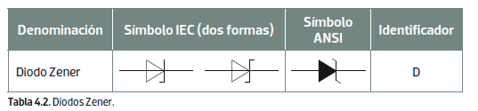

1. Semiconductores
Desde el punto de vista electrónico, se puede decir que los materiales se clasifican en:
- Aislantes: que no permiten el paso de la corriente eléctrica a través de ellos, como pueden ser la madera, el plástico, el papel, etc.
- Conductores: que permiten el paso de la corriente eléctrica a través de ellos fácilmente, como pueden ser el cobre, el aluminio, el oro, etc.
- Semiconductores: que se pueden comportar como aislantes o como conductores en función de determinadas condiciones físicas o eléctricas que se producen sobre ellos. Los más utilizados son el silicio y el germanio.
El uso de los semiconductores ha permitido desarrollar toda una tecnología de componentes electrónicos, denominados activos, que cambian su comportamiento en el circuito en función de cómo les afectan las condiciones eléctricas o físicas externas. Los componentes activos más conocidos, y que aquí se van a estudiar, son el diodo y transistor, junto con sus variantes.
1.1. Unión PN
Para conseguir que un material como el silicio sea eléctricamente activo, es necesario añadirle impurezas (doparlo), de forma que pueda tener exceso o, en su caso, defecto de electrones (huecos). Los materiales dopados con exceso de electrones son los denominados de tipo N, y los que tienen defecto de ellos, son denominados tipo P. Por sí solos, ninguno de ellos tiene aplicaciones eléctricas, pero si se hace una unión entre ambos se consigue un comportamiento electrónico que es la base de los componentes activos.
2. El diodo
Es un semiconductor formado por la unión de material P y material N. A la zona P se la denomina ánodo (a) y a la zona N cátodo (k). En el símbolo del diodo el ánodo se representa con una flecha que apunta a una línea vertical que, a su vez, representa el cátodo.

Un diodo tiene la propiedad de facilitar el paso de corriente en un sentido y bloquearla en el otro.

Así, si un diodo se inserta en un circuito eléctrico, y la parte positiva se conecta al ánodo, el diodo deja pasar la corriente a través de él. Entonces, se dice que el diodo se ha polarizado de forma directa. Por el contrario, si el positivo de la fuente de tensión se aplica en el cátodo, el diodo se polariza de forma inversa, y no permite el paso de la corriente a través de él.
Se puede decir que un diodo se comporta como un interruptor abierto cuando está polarizado en inversa y como un interruptor cerrado cuando está polarizado en directa.
Esta propiedad de los diodos es especialmente útil para rectificar la corriente alterna y, así, convertirla en corriente continua, y para controlar el direccionamiento de las señales en los circuitos electrónicos.

2.1. Características de un diodo
Cuando un diodo está en polarización directa, comienza a conducir siempre que sea superada la denominada tensión de umbral entre sus terminales. Esta tensión suele ser de 0,7 V en los diodos de silicio y de 0,3 en los de germanio. Esto significa que cuando se alcanza dicho umbral, la corriente fluye por el diodo y en el circuito en el que se encuentra conectado.
Sin embargo, cuando el diodo está polarizado a la inversa, la unión PN se comporta de forma contraria a la polarización directa, no dejando pasar corriente a través de él. Si en esta situación la tensión en los terminales del diodo aumenta de forma considerable (tensión de ruptura), también lo hace la corriente, y el diodo se destruye de forma irremediable.

Los fabricantes suelen dar los valores de umbral y de ruptura de sus diodos, tanto en tensión como en corriente. Además, es importante conocer cuáles son las tensiones y corrientes nominales y máximas con las que el diodo puede trabajar, para elegirlo de forma adecuada en función de la aplicación, y así evitar que se destruya.
2.2. Encapsulado de los diodos
La forma en la que se comercializan los diferentes componentes electrónicos se encuentra estandarizada. La fabricación de componentes se hace en función de diferentes tipos de encapsulado, que permiten su adaptación a todo tipo de aplicaciones.
Algunos de los encapsulados más comunes de los diodos son los que se muestran a continuación. Estos se emplean en función de las necesidades y, sobre todo, de la potencia que tienen que gestionar en el circuito.

3. Tipos de diodos
Dependiendo de la aplicación en la que se vayan a utilizar, existen diferentes tipos de diodos. Algunos de los más representativos son los que se nombran a continuación:
3.1. Diodos rectificadores
Se utilizan para convertir la corriente alterna en continua, y su campo de aplicación es principalmente el de los circuitos y las fuentes de alimentación. Suelen ser diodos que trabajan con corrientes elevadas, y los hay incluso para controlar cargas de gran potencia.
En próximas unidades se estudiará en detalle cómo utilizarlos para rectificar la corriente en aplicaciones para fuentes de alimentación.
3.2. Diodos de señal
Son diodos que están diseñados para trabajar con pequeñas corrientes (del orden de 100 o 200 mA) y se utilizan para acondicionar las señales en circuitos que requieren trabajar a alta velocidad.
Estos diodos tienen un tamaño más reducido que los de tipo rectificador y se suelen presentar con un encapsulado transparente, similar al vidrio. No obstante, su funcionamiento es idéntico a los anteriores.
3.3. Diodo Zener
Es un diodo especial, que debe su nombre al físico que lo inventó. Este diodo trabaja en polarización inversa dentro de la zona de ruptura, pero, en lugar de destruirse, se produce en él un efecto denominado de «avalancha», que permite estabilizar la salida en tensión en sus terminales. Este efecto sirve para que los diodos Zener se utilicen en circuitos reguladores de tensión.

Las principales características de un Zener son su tensión nominal en voltios y su potencia de disipación en vatios. Ambas están normalizadas y se comercializan en valores estándar. En el caso de la tensión, se muestra un ejemplo en la tabla 4.3 que aparece en el margen. En el caso de la potencia, los valores comerciales son de 0,5 W, 1 W, 5 W, 10 W y 20 W.
Un diodo Zener debe ser polarizado mediante una resistencia, como se muestra en el esquema de la figura. Cuando la alimentación del conjunto es menor que la tensión nominal del Zener, este no conduce, y en la salida hay la misma tensión que la de la alimentación. Sin embargo, cuando el circuito es alimentado con una tensión superior a la nominal de la del Zener, este entra en conducción, y en la salida del circuito solamente se obtiene el valor de la tensión del Zener, siendo la resistencia la que absorbe el valor restante.
Así el proceso de cálculo de un Zener para un valor de carga determinado se muestra a continuación.